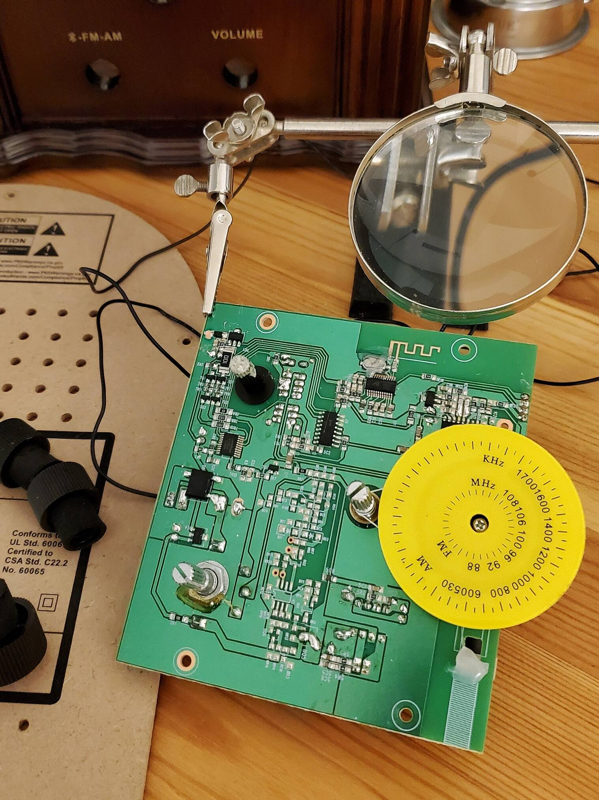

{kind=link}

GrandmaTunes: Internet Controlled Antique Radio
April 27, 2021
Overview
Internet connected, remotely controlled antique style radio to assist the elderly.
Time Invested: 6 hours
Cost: $80
Features:
- Remote control via the web
- Web UI with basic authentication
- Music streaming
- Internet radio
- Local media playback
Video
Backstory
Early in the COVID-19 pandemic, my grandmother moved into assisted living. The (understandably) strict visitation limits left her largely isolated. To keep in touch with Grandma and help her stay engaged, we installed a digital picture frame that doubled as a video calling portal. Nonetheless, her cognitive function declined after a few months.
My grandmother loves to listen to the radio. When she lost her ability to turn it on, I had to intervene. For years, I've been thinking about how building devices can keep our older loved ones connected in the digital age. I already had a number of ideas, and this was my time to act.
Radio Teardown
To start, I purchased a Crosley Companion radio. The brand and produced a number of recognizable classic radios, and the Companion maintains that antique look and feel. But this model was new and, importantly, easier to hack since I wouldn't need to rebuild the amplifier.
I opted to reverse engineer the radio the old fashioned way, without an oscilloscope or logic analyzer. I disassembled it and quickly identified a Bluetooth chip with a trace antenna on the main PCB. A quick search of the part marking took me to a Chinese semiconductor product page, which confirmed that the chip was an audio device. However, all of the important details were only available in simplified Chinese. Before cozying up to Google Translate to decipher the datasheet, I poked and prodded the audio pins. The chip seemed to output line level analog audio, rather than I2S, with a connection to the audio amplifier circuit. No need to find an I2S library for the Raspberry Pi. Score!
My 10pm initial investigation was looking like a project I could finish before bedtime.
Radio Upgrades and Web Control
I cut the audio traces from the Bluetooth chip and soldered on a 3.5 mm audio jack. Then, I dusted off an old Raspberry Pi and installed LibreELEC, a lightweight Debian Linux distro, optimized for the Kodi media center. I enabled SSH and analog audio output in raspi-config.
Inside Kodi, I installed the Spotify plug-in and set up support for multiple radio streams. I noticed that Grandma's church consistently uses the same online streaming endpoint, so I added it as a dedicated radio station. Since she also enjoys traditional German polka and speaks fluent German, I added a polka radio stream from a station in Germany.
No-IP offers free web domains for personal use. I selected a domain name centered around Grandma to point to her network at the assisted living facility. When my mother visited, I requested that she go to https://duckduckgo.com/?&q=ip to obtain Grandma's public IP address. A quick DNS update made grandmas-example-page.myftp.org connect to Grandma's IP.
Reverse Engineering WiFi Connectivity
Since I live in Chicago and my grandmother in Texas, I needed to ship the radio and have it auto-connect to her WiFi when plugged in. However, the LibreELEC team explicitly stated on their forums that they do not support pre-configuring WiFi credentials. The Linux package they use doesn't support it. Baloney. When I manually add my WiFi credentials, they have to be stored somewhere, right?
I dug around and found that ConnMan (love the name) manages WiFi connectivity for this Linux release. ConnMan stores WiFi credentials in folder called /storage/.cache/connman where you'll find subdirectories for each WiFi network. The subdirectories have names like this: wifi_00e04c81beef_50726574747920666c7920666f7220612057694669_managed_psk. A puzzle!
The first odd string 00e04c81beef seemed like a MAC address. I checked my WiFi router MAC address to confirm, and yes. Yes, it was. And the second, longer string looked like a hexadecimal representation of something. ASCII for the router name? Also yes!
A config file inside the sub-directory called settings corroborated the function of the second string. The value for SSID= matched the string in the sub-directory name. In other words, 50726574747920666c7920666f7220612057694669 was used in both the config file and sub-directory name. It translates to Pretty fly for a WiFi, confirmed with this handy online HEX <-> ASCII converter.
All I needed to do was plop a new sub-directory and config file in /storage/.cache/connman to make the radio to auto-connect to Grandma's WiFi. The required format is:
- Root directory:
/storage/.cache/connman - Sub-directory name:
wifi_<WiFi-Router-MAC-Address>_<SSID-in-HEX>_managed_psk - Config file inside the sub-directory:
settings(no file extension) - Config file contents:
[wifi_<WiFi-Router-MAC-Address>_<SSID-in-HEX>_managed_psk]
Name=<Router Name (SSID) in Plain Text>
SSID=<SSID-in-HEX>
Frequency=2447 # Can probably be adjusted, but my Pi only does 2.4 GHz WiFi
Favorite=true
AutoConnect=true
Passphrase=<WiFi-Password>
IPv4.method=dhcp
IPv6.method=auto
IPv6.privacy=disabled
I requested that my mother send a photo of the bottom of Grandma's router to get the MAC address.
Installation
With everything set up and tested, I shipped the radio down to Texas and crossed my fingers. My mother brought it to Grandma's apartment, plugged it in, and cranked the volume. After a few seconds booting, GrandmaTunes was live!
Grandma may not be able to control her radio anymore, but now we can do it for her, even under quarantine. We can play her favorite songs, stream her Sunday church service, and play polka radio streams live from Germany - only with her express permission provided via digital picture frame video chat, of course.
Gallery
{kind=link}
{kind=link}
{kind=link}
{kind=link}
License: CC BY-SA 4.0 Deed - You may copy, adapt, and use this work for any purpose, even commercial, but only if derivative works are distributed under the same license.
Category: Hardware, Software